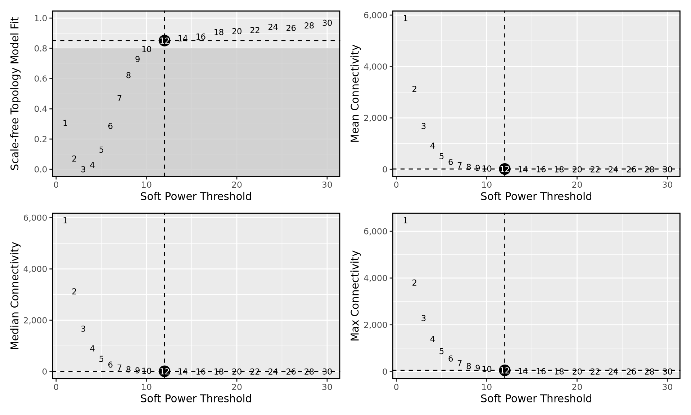
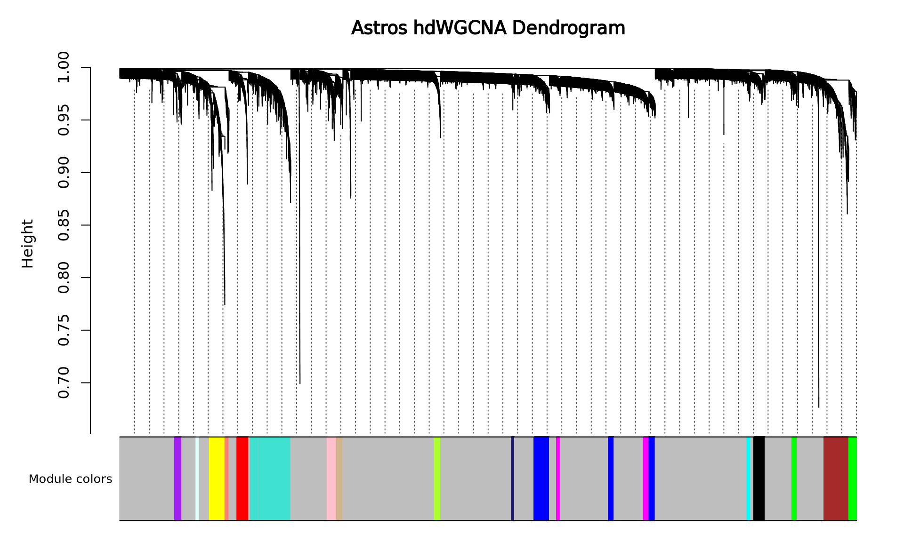
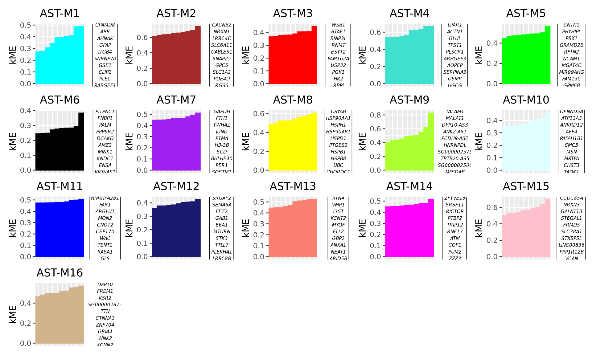
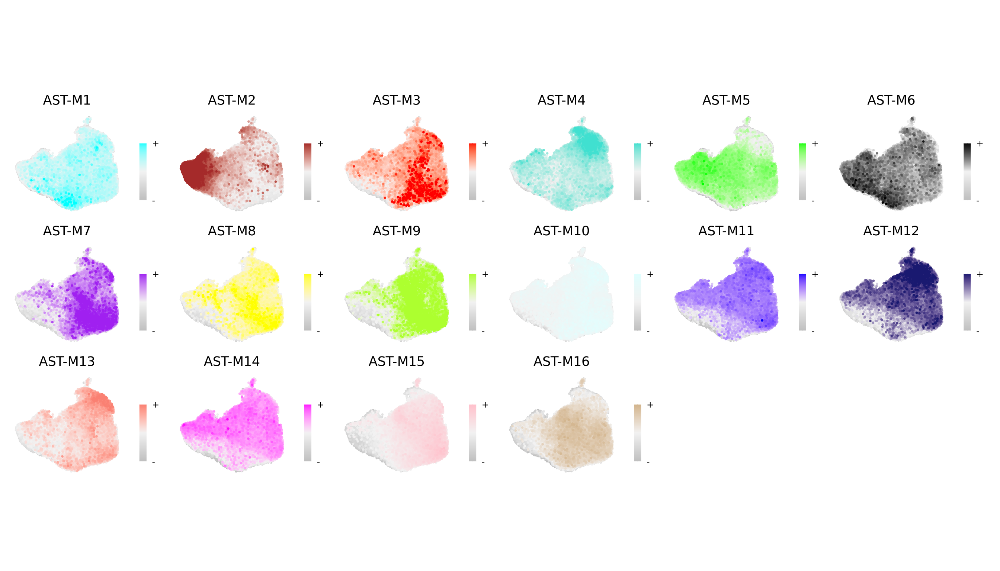
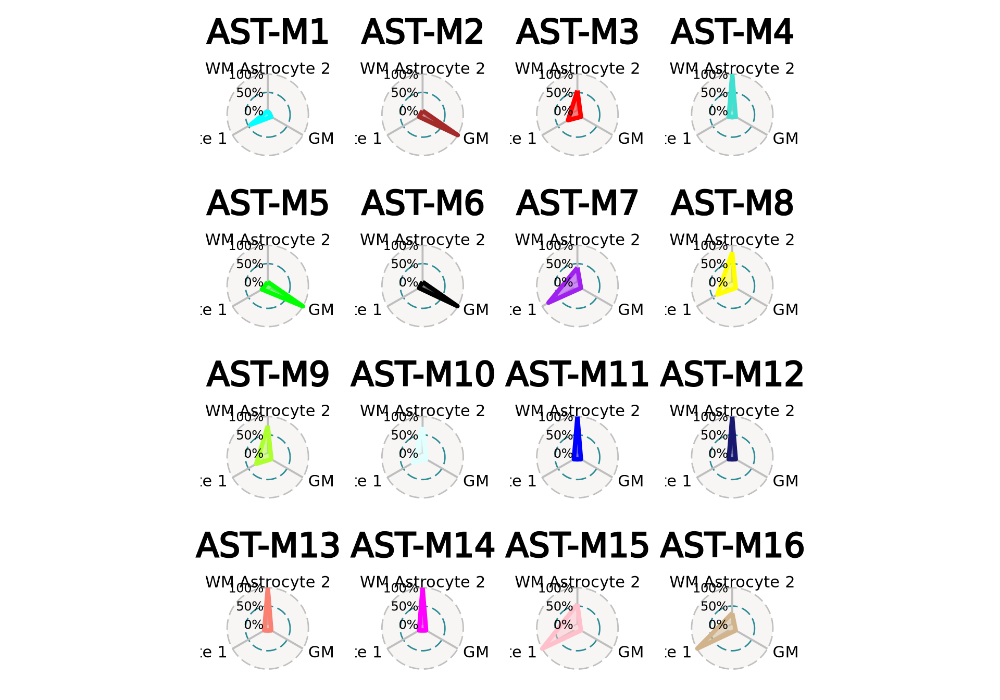

# Basics
library(tidyverse)
library(patchwork)
library(knitr)
library(here)
# Analysis-specific
library(Seurat)
library(WGCNA)
library(hdWGCNA)
library(msigdbr) # For loading in GO-terms
library(fgsea) # For running GSEA7. Gene modules with hdWGCNA
About this analysis
This script identifies co-expression modules in the astrocytes with hdWGCNA, the high-dimensional version of WGCNA for single-cell data. Because single-nuclei data is sparse, hdWGCNA first aggregates similar cells into metacells, then builds a co-expression network on them, and finally assigns genes to modules. The modules are examined (hub genes, module eigengenes on the UMAP).
Unfortunately, not too much time to investigate this. I planned on running GO-terms on it all, but did not manage to do so.
Preparation
Prerequisites
This script was run with the conda environment r_scrnaseq_core.
Packages
Directories
# Get string of home directory. I used the here package, which sets the home
# directory when loading library(here)
dir_home <- here::here()
## Data directories
dir_data <- file.path(dir_home, "data/processed")
# Directory for the topological overlap matrix (TOM).
# In the analysis, hdWGCNA creates a large binary file called the TOM file,
# which I'll store in a temporary folder
dir_tom <- file.path(dir_home, "data/temporary/hdwgcna_tom")
dir.create(dir_tom, recursive = TRUE, showWarnings = FALSE)
## Results directories
# Create subfolders with the name of this script, so all figures/tables of
# this script are in the same place
folder_name <- knitr::current_input(dir = FALSE)
folder_name <- str_remove(folder_name, "\\.\\w*$")
dir_fig <- file.path(dir_home, "results/figures", folder_name)
dir.create(dir_fig, recursive = TRUE, showWarnings = FALSE)
dir_tab <- file.path(dir_home, "results/tables", folder_name)
dir.create(dir_tab, recursive = TRUE, showWarnings = FALSE)
## Manuscript figure directory
# rds/grob objects for report figures land here, to be assembled by
# scripts/11_assemble_manuscript_figures.qmd
dir_man <- file.path(dir_home, "results/figures/manuscript")Defining variables
This code block defines variables to be used throughout the rest of the document. If someone ever wants to run these scripts with different variables, they can easily change it here. I’ll substantiate any choices here.
# Input: clustered astrocyte Seurat object (made in 02_clustering.qmd)
file_seurat <- "seu_shortread_astros_clustered.rds"
# Seurat metadata column with the sample ID
col_sample <- "AnonymousID"
# Reductions in the Seurat object
reduction_harmony <- "harmony" # used to find similar cells for metacells
reduction_umap <- "umap" # used to plot module eigengenes
# hdWGCNA settings
wgcna_name <- "wgcna" # name of the hdWGCNA experiment in the object
gene_fraction <- 0.05 # keep genes expressed in at least 5% of cells
k_metacells <- 25 # number of cells aggregated per metacell (default)
network_type <- "signed"
soft_power <- 12 # lowest power with SFT model fit >= 0.8 (see
# fig-01-soft-powers; [CHECK] re-check this if the
# input object or settings change!)
module_prefix <- "AST-M" # modules are renamed to AST-M1, AST-M2, ...
n_hubs <- 10 # hub genes to extract per module
seed <- 42 # metacell construction is random, so I set a seedHelper functions
Click here to view the helper functions of this document
theme_quarto() and theme_manuscript()
I created my own themes to add to figures. theme_quarto() is used to add themes to figures as displayed in the Quarto document and saved to disk as .pdf or .png. theme_manuscript() is used to add themes to figures as they will end up in the manuscript. I can already add arguments with theme() or specific themes (e.g. theme_classic(), my personal favourite) to plots; adding theme() afterwards keeps whatever was added in theme() before it, unless I specify that arugment here - that’s why I allowed to specify some things within my functions as well.
theme_quarto <- function(
legend_position = "right",
plot_title = element_blank()
) {
theme(
plot.title = plot_title,
legend.position = legend_position
)
}
theme_manuscript <- function(
legend_position = "none",
plot_title = element_blank(),
axis_title_size = 8,
axis_text_size = 6
) {
theme(
plot.title = plot_title,
legend.position = legend_position,
axis.title = element_text(size = axis_title_size),
axis.text = element_text(size = axis_text_size),
legend.key.size = unit(0.4, "cm"),
legend.text = element_text(size = 8),
legend.title = element_text(size = 9)
)
}save_plot()
This document displays all the figures I make, but I also want them saved to disk — both as .png and .pdf. I only need to provide the ggplot object, a filename (without extension), and optionally the width and height of the figure and additional arguments put into themes.
The figures for my written report contain subfigures spread across multiple scripts. Since I want to assemble these panel figures via R code rather than by hand, save_plot() can also optionally save the plot object itself to disk as an .rds file, for a final script to later combine with patchwork. Set figure to the name the figure should carry in the report (e.g. "SF1A") to trigger this; leave it NULL (the default) to just save the .png/.pdf as normal.
A live ggplot object carries its underlying data along with it — for plots built from large Seurat objects, this can balloon the saved file to gigabytes. To avoid this, save_plot() converts the object to a grob (a static, pre-rendered drawing, with no data attached) before saving it as .rds. This is controlled by the grob argument, and defaults to TRUE, since converting a small plot costs nothing but forgetting to convert a large one is expensive. Set grob = FALSE only if a later step specifically needs the original, live ggplot object rather than its rendered form.
save_plot <- function(
p, filename,
width = 10, height = 6,
figure = NULL, grob = TRUE, apply_theme = TRUE,
add_tag = TRUE, tag_text_size = 14,
legend_pos_manuscript = "none"
) {
## Save image on disk as png and pdf
# Add Quarto-specific theme, unless the plot has its own custom theme
if (apply_theme) {
p_image <- p + theme_quarto()
} else {
p_image <- p
}
file_png <- file.path(dir_fig, paste0(filename, ".png"))
ggsave(file_png, p_image, width = width, height = height, dpi = 150)
file_pdf <- file.path(dir_fig, paste0(filename, ".pdf"))
ggsave(file_pdf, p_image, width = width, height = height, dpi = 150)
## Save the ggplot object on disk as an rds file
if (!is.null(figure)) {
# Add tag if needed
if (add_tag) {
tag <- str_extract(figure, "[A-Z]$")
p <- p +
labs(tag = tag) +
theme(
plot.tag = element_text(
face = "bold",
size = tag_text_size,
hjust = 0, vjust = 0
)
)
}
# Add manuscript-specific theme, unless the plot has its own custom theme
if (apply_theme) {
p <- p + theme_manuscript(legend_position = legend_pos_manuscript)
}
file_rds <- file.path(dir_man, paste0(figure, ".rds"))
# Convert the object to a grob if needed
if (grob) {
p <- ggplotGrob(p)
}
# Save on disk
saveRDS(p, file_rds)
}
}print_tabset()
Quarto cannot cross-reference figures that are made inside a loop. To still display the plots of a loop in this document, I collect them in a named list and show them as tabs with print_tabset(). The names of the list become the tab titles. It also accepts data frames (shown as a table). This function writes raw Quarto markdown, so the chunk that calls it needs the chunk option #| output: asis. heading_level should be one deeper than the heading above the chunk.
print_tabset <- function(obj_list, heading_level = 3) {
cat("::: {.panel-tabset}\n\n")
for (nm in names(obj_list)) {
cat(strrep("#", heading_level), " ", nm, "\n\n", sep = "")
obj <- obj_list[[nm]]
if (inherits(obj, "ggplot")) {
print(obj)
} else if (is.data.frame(obj)) {
cat(knitr::kable(obj, format = "pipe"), sep = "\n")
}
cat("\n\n")
}
cat(":::\n\n")
}Preparing the Seurat object
I load the clustered astrocyte Seurat object from disk.
seu <- readRDS(file.path(dir_data, file_seurat))
# Run UpdateSeuratObject, as indicated in hdWGCNA vignette
seu <- SeuratObject::UpdateSeuratObject(seu)hdWGCNA preprocessing
Selecting genes
I select genes by fraction, as I only want to include genes expressed in at least 5% of cells (as defined under the header Define Variables).
seu <- SetupForWGCNA(
seu,
gene_select = "fraction",
fraction = gene_fraction,
wgcna_name = wgcna_name # stored as the name of the hdWGCNA experiment
)Constructing metacells
Metacells are constructed in each group. Normally, one groups by sample and cell type, but as all cells are astrocytes, I only group by sample (AnonymousID).
# Metacell construction is stochastic, so I set a seed (for reproducibility)
set.seed(seed)
seu <- MetacellsByGroups(
seurat_obj = seu,
group.by = col_sample,
ident.group = col_sample,
reduction = reduction_harmony,
k = k_metacells
)
# Normalize metacell expression matrix
seu <- NormalizeMetacells(seu)Setting the expression matrix
I make sure the right assay and layer are used. This should be the default, but I specify RNA and data to be sure.
seu <- SetDatExpr(
seu,
assay = "RNA",
layer = "data"
)Selecting the soft power threshold
The soft power threshold is extremely important in WGCNA: it acts as a Boolean-like threshold separating strong from weak connections in the correlation matrix, a step essential to reduce noise. TestSoftPowers() runs a parameter sweep. One should pick the lowest soft power with a scale-free topology (SFT) model fit greater than or equal to 0.8. In my case, that was at 12, so I set that as the threshold.
seu <- TestSoftPowers(
seu,
networkType = network_type
)pickSoftThreshold: will use block size 3983.
pickSoftThreshold: calculating connectivity for given powers...
..working on genes 1 through 3983 of 11232 ..working on genes 3984 through 7966 of 11232 ..working on genes 7967 through 11232 of 11232 Power SFT.R.sq slope truncated.R.sq mean.k. median.k. max.k.
1 1 3.07e-01 13.6000 0.925 5.88e+03 5.90e+03 6470.00
2 2 7.13e-02 2.9900 0.914 3.13e+03 3.13e+03 3810.00
3 3 4.67e-06 0.0158 0.939 1.69e+03 1.67e+03 2290.00
4 4 2.90e-02 -0.9270 0.962 9.21e+02 9.03e+02 1400.00
5 5 1.30e-01 -1.5800 0.962 5.10e+02 4.93e+02 873.00
6 6 2.87e-01 -2.0300 0.957 2.86e+02 2.72e+02 558.00
7 7 4.71e-01 -2.4000 0.968 1.62e+02 1.52e+02 363.00
8 8 6.22e-01 -2.5900 0.979 9.34e+01 8.55e+01 240.00
9 9 7.29e-01 -2.7000 0.989 5.44e+01 4.85e+01 161.00
10 10 7.95e-01 -2.7800 0.995 3.22e+01 2.78e+01 110.00
11 12 8.51e-01 -2.6900 0.998 1.17e+01 9.37e+00 53.30
12 14 8.67e-01 -2.6000 0.998 4.51e+00 3.27e+00 26.90
13 16 8.78e-01 -2.4400 0.997 1.84e+00 1.17e+00 14.10
14 18 9.08e-01 -2.2000 0.994 7.92e-01 4.31e-01 7.58
15 20 9.13e-01 -2.2100 0.996 3.61e-01 1.63e-01 4.94
16 22 9.21e-01 -2.2200 0.992 1.74e-01 6.31e-02 3.53
17 24 9.42e-01 -2.1400 0.986 8.90e-02 2.50e-02 2.73
18 26 9.35e-01 -2.1300 0.972 4.80e-02 9.91e-03 2.46
19 28 9.52e-01 -2.0000 0.972 2.73e-02 4.06e-03 2.22
20 30 9.69e-01 -1.8600 0.980 1.64e-02 1.68e-03 2.01plot_list_powers <- PlotSoftPowers(seu) Power SFT.R.sq slope truncated.R.sq mean.k. median.k. max.k.
1 1 3.067619e-01 13.6116545 0.9254015 5884.9694 5896.6457 6469.2419
2 2 7.132707e-02 2.9929792 0.9140211 3128.4666 3125.3358 3808.3326
3 3 4.672776e-06 0.0158110 0.9391267 1686.0758 1671.3531 2286.7181
4 4 2.904582e-02 -0.9273132 0.9618911 920.8726 902.7482 1398.1843
5 5 1.297977e-01 -1.5768376 0.9618911 509.5704 493.1384 872.6396
6 6 2.871067e-01 -2.0337777 0.9574240 285.6660 272.1695 558.0560p_soft_powers <- wrap_plots(plot_list_powers, ncol = 2)
p_soft_powers
I also save the results as a table so I can inspect the exact numbers. The soft power I chose (soft_power, defined at the top) is the lowest power with an SFT model fit of at least 0.8.
power_table <- GetPowerTable(seu)
write_csv(power_table, file.path(dir_tab, "power_table.csv"))
kable(power_table)| Power | SFT.R.sq | slope | truncated.R.sq | mean.k. | median.k. | max.k. |
|---|---|---|---|---|---|---|
| 1 | 0.3067619 | 13.6116545 | 0.9254015 | 5884.9693908 | 5896.6457094 | 6469.241909 |
| 2 | 0.0713271 | 2.9929792 | 0.9140211 | 3128.4666047 | 3125.3357835 | 3808.332567 |
| 3 | 0.0000047 | 0.0158110 | 0.9391267 | 1686.0757723 | 1671.3530501 | 2286.718128 |
| 4 | 0.0290458 | -0.9273132 | 0.9618911 | 920.8725798 | 902.7481509 | 1398.184267 |
| 5 | 0.1297977 | -1.5768376 | 0.9618911 | 509.5703508 | 493.1384285 | 872.639562 |
| 6 | 0.2871067 | -2.0337777 | 0.9574240 | 285.6660480 | 272.1694851 | 558.055995 |
| 7 | 0.4705977 | -2.3985686 | 0.9677113 | 162.2465367 | 151.7868920 | 363.021425 |
| 8 | 0.6222047 | -2.5921902 | 0.9793087 | 93.3680048 | 85.5478865 | 239.847324 |
| 9 | 0.7287809 | -2.6975144 | 0.9892315 | 54.4490057 | 48.4912577 | 161.083067 |
| 10 | 0.7948755 | -2.7761316 | 0.9945354 | 32.1828921 | 27.7653203 | 110.130988 |
| 12 | 0.8512924 | -2.6879434 | 0.9980210 | 11.7146375 | 9.3685850 | 53.300672 |
| 14 | 0.8665540 | -2.6012916 | 0.9976614 | 4.5087216 | 3.2687723 | 26.947048 |
| 16 | 0.8776009 | -2.4397381 | 0.9965836 | 1.8363778 | 1.1739172 | 14.089763 |
| 18 | 0.9078703 | -2.2014785 | 0.9943565 | 0.7917556 | 0.4310302 | 7.575857 |
| 20 | 0.9134382 | -2.2135984 | 0.9959568 | 0.3613066 | 0.1625149 | 4.944204 |
| 22 | 0.9205618 | -2.2187932 | 0.9917753 | 0.1744258 | 0.0631079 | 3.530126 |
| 24 | 0.9422416 | -2.1408486 | 0.9863890 | 0.0890224 | 0.0249613 | 2.732867 |
| 26 | 0.9348869 | -2.1329618 | 0.9721130 | 0.0479912 | 0.0099084 | 2.456850 |
| 28 | 0.9519419 | -2.0002171 | 0.9723562 | 0.0272952 | 0.0040576 | 2.216904 |
| 30 | 0.9686957 | -1.8649858 | 0.9798997 | 0.0163513 | 0.0016777 | 2.005405 |
Constructing the co-expression network
seu <- ConstructNetwork(
seu,
soft_power = soft_power, # selected based on TestSoftPowers()
tom_name = "hdwgcna_astros",
tom_outdir = dir_tom,
overwrite_tom = TRUE
) Calculating consensus modules and module eigengenes block-wise from all genes
Calculating topological overlaps block-wise from all genes
Flagging genes and samples with too many missing values...
..step 1
TOM calculation: adjacency..
..will not use multithreading.
Fraction of slow calculations: 0.000000
..connectivity..
..matrix multiplication (system BLAS)..
..normalization..
..done.
..Working on block 1 .
..Working on block 1 .
..merging consensus modules that are too close..The network is visualized with a dendrogram. PlotDendrogram() uses a WGCNA function that predates ggplot2, so it does not return a ggplot object and needs a different way of saving to disk.
PlotDendrogram(seu, main = "Astros hdWGCNA Dendrogram")
png
2 Module eigengenes and connectivity
Module eigengenes
Module eigengenes summarize the expression of each module per cell. I harmonize them by sample.
seu <- ModuleEigengenes(
seu,
group.by.vars = col_sample
)[1] "grey"Initializing centroids[1] "cyan"Initializing centroids[1] "brown"Initializing centroids[1] "red"Initializing centroids[1] "turquoise"Initializing centroids[1] "green"Initializing centroids[1] "black"Initializing centroids[1] "purple"Initializing centroids[1] "yellow"Initializing centroids[1] "greenyellow"Initializing centroids[1] "lightcyan"Initializing centroids[1] "blue"Initializing centroids[1] "midnightblue"Initializing centroids[1] "salmon"Initializing centroids[1] "magenta"Initializing centroids[1] "pink"Initializing centroids[1] "tan"Initializing centroids# Extract harmonized module eigengenes
eigengenes <- GetMEs(seu)Module connectivity
I compute the eigengene-based connectivity (kME) of each gene to each module, and rename the modules.
seu <- ModuleConnectivity(seu)
seu <- ResetModuleNames(
seu,
new_name = module_prefix
)p_kme <- PlotKMEs(seu, ncol = 5)
p_kme
Extracting hub genes and module assignments
Hub genes are the genes with the highest kME in each module.
hub_df <- GetHubGenes(seu, n_hubs = n_hubs)
write_csv(hub_df, file.path(dir_tab, "hub_genes.csv"))
kable(head(hub_df, 10))| gene_name | module | kME |
|---|---|---|
| CPAMD8 | AST-M1 | 0.4872671 |
| ABR | AST-M1 | 0.4853078 |
| AHNAK | AST-M1 | 0.4088209 |
| GFAP | AST-M1 | 0.3999356 |
| ITGB4 | AST-M1 | 0.3969229 |
| SNRNP70 | AST-M1 | 0.3935310 |
| GSE1 | AST-M1 | 0.3434680 |
| CLIP2 | AST-M1 | 0.3059984 |
| PLEC | AST-M1 | 0.2734910 |
| RABGEF1 | AST-M1 | 0.2707595 |
The module assignment table links each gene to its module.
modules <- GetModules(seu)
write_csv(modules, file.path(dir_tab, "module_assignment_table.csv"))
table(modules$module)
grey AST-M1 AST-M2 AST-M3 AST-M4 AST-M5 AST-M6 AST-M7 AST-M8 AST-M9
8226 60 378 176 613 198 174 110 236 99
AST-M10 AST-M11 AST-M12 AST-M13 AST-M14 AST-M15 AST-M16
51 422 52 63 133 144 97 Visualizing module eigengenes on the UMAP
A feature plot of the harmonized module eigengenes (hMEs) for each module, ordered so cells with the highest hMEs are plotted on top.
plot_list_mes <- ModuleFeaturePlot(
seu,
reduction = reduction_umap,
features = "hMEs", # plot the hMEs
order = TRUE # order so the points with highest hMEs are on top
)[1] "AST-M1"[1] "AST-M2"
[1] "AST-M3"
[1] "AST-M4"
[1] "AST-M5"
[1] "AST-M6"
[1] "AST-M7"
[1] "AST-M8"
[1] "AST-M9"
[1] "AST-M10"
[1] "AST-M11"
[1] "AST-M12"
[1] "AST-M13"
[1] "AST-M14"
[1] "AST-M15"
[1] "AST-M16"p_module_features <- wrap_plots(plot_list_mes, ncol = 6)
p_module_features
p_module_radar <- ModuleRadarPlot(
seu,
group.by = 'annotation',
axis.label.size=4,
grid.label.size=4
)
p_module_radar
I planned to examine the modules with GO-terms, but in general, I did not have much time to examine hdWGCNA so I did not get to that…
Saving the hdWGCNA object
saveRDS(seu, file.path(dir_data, "seu_shortread_astros_hdwgcna.rds"))Session info
I used the conda environment r_scrnaseq_core to run this script. You can find major package versions in the file /environments/r_scrnaseq_core.yml, but for full reproducibility, I’ll display all dependencies and package versions below.
sessionInfo()R version 4.4.3 (2025-02-28)
Platform: x86_64-conda-linux-gnu
Running under: Rocky Linux 8.10 (Green Obsidian)
Matrix products: default
BLAS/LAPACK: /path/to/folder/software/miniforge/miniforge3/envs/r_scrnaseq_core/lib/libopenblasp-r0.3.34.so; LAPACK version 3.12.0
locale:
[1] LC_CTYPE=en_US.UTF-8 LC_NUMERIC=C
[3] LC_TIME=en_US.UTF-8 LC_COLLATE=en_US.UTF-8
[5] LC_MONETARY=en_US.UTF-8 LC_MESSAGES=en_US.UTF-8
[7] LC_PAPER=en_US.UTF-8 LC_NAME=C
[9] LC_ADDRESS=C LC_TELEPHONE=C
[11] LC_MEASUREMENT=en_US.UTF-8 LC_IDENTIFICATION=C
time zone: Europe/Amsterdam
tzcode source: system (glibc)
attached base packages:
[1] stats4 stats graphics grDevices utils datasets methods
[8] base
other attached packages:
[1] ggradar_0.2 fgsea_1.32.2
[3] msigdbr_26.1.1 hdWGCNA_0.4.12
[5] enrichR_3.4 SummarizedExperiment_1.36.0
[7] Biobase_2.66.0 MatrixGenerics_1.18.0
[9] matrixStats_1.5.0 GenomicRanges_1.58.0
[11] GenomeInfoDb_1.42.0 IRanges_2.40.0
[13] S4Vectors_0.44.0 BiocGenerics_0.52.0
[15] GeneOverlap_1.42.0 UCell_2.10.1
[17] tidygraph_1.3.0 ggraph_2.2.2
[19] igraph_2.3.3 ggrepel_0.9.8
[21] harmony_2.0.5 Rcpp_1.1.2
[23] WGCNA_1.74 fastcluster_1.3.0
[25] dynamicTreeCut_1.63-1 Seurat_5.5.1
[27] SeuratObject_5.4.0 sp_2.2-3
[29] here_1.0.2 knitr_1.52
[31] patchwork_1.3.2 lubridate_1.9.5
[33] forcats_1.0.1 stringr_1.6.0
[35] dplyr_1.2.1 purrr_1.2.2
[37] readr_2.2.0 tidyr_1.3.2
[39] tibble_3.3.1 ggplot2_4.0.3
[41] tidyverse_2.0.0
loaded via a namespace (and not attached):
[1] spatstat.sparse_3.2-0 bitops_1.1-0
[3] httr_1.4.9 RColorBrewer_1.1-3
[5] doParallel_1.0.17 tools_4.4.3
[7] sctransform_0.4.3 backports_1.5.1
[9] R6_2.6.1 uwot_0.2.5
[11] withr_3.0.3 gridExtra_2.3.1
[13] preprocessCore_1.68.0 progressr_1.0.0
[15] cli_3.6.6 textshaping_1.0.5
[17] spatstat.explore_3.8-2 fastDummies_1.7.6
[19] labeling_0.4.3 S7_0.2.2
[21] spatstat.data_3.1-9 proxy_0.4-29
[23] ggridges_0.5.7 pbapply_1.7-4
[25] systemfonts_1.3.2 foreign_0.8-91
[27] parallelly_1.48.0 WriteXLS_6.8.0
[29] rstudioapi_0.19.0 impute_1.80.0
[31] FNN_1.1.4.1 generics_0.1.4
[33] gtools_3.9.5 ica_1.0-3
[35] spatstat.random_3.5-1 vroom_1.7.1
[37] Matrix_1.7-6 abind_1.4-8
[39] lifecycle_1.0.5 yaml_2.3.12
[41] gplots_3.3.0 SparseArray_1.6.0
[43] Rtsne_0.17 grid_4.4.3
[45] promises_1.5.0 crayon_1.5.3
[47] miniUI_0.1.2 lattice_0.23-1
[49] cowplot_1.2.0 pillar_1.11.1
[51] rjson_0.2.23 future.apply_1.20.2
[53] codetools_0.2-20 fastmatch_1.1-8
[55] glue_1.8.1 spatstat.univar_3.2-0
[57] data.table_1.18.6.1 vctrs_0.7.3
[59] png_0.1-9 spam_2.11-4
[61] gtable_0.3.6 assertthat_0.2.1
[63] cachem_1.1.0 xfun_0.60
[65] S4Arrays_1.6.0 mime_0.13
[67] survival_3.8-12 SingleCellExperiment_1.28.0
[69] iterators_1.0.14 fitdistrplus_1.2-6
[71] ROCR_1.0-12 nlme_3.1-170
[73] bit64_4.8.6 RcppAnnoy_0.0.23
[75] rprojroot_2.1.1 irlba_2.3.7
[77] KernSmooth_2.23-27 otel_0.2.0
[79] rpart_4.1.27 colorspace_2.1-3
[81] Hmisc_5.3-0 nnet_7.3-21
[83] tidyselect_1.2.1 bit_4.6.0
[85] compiler_4.4.3 curl_8.0.0
[87] htmlTable_2.5.0 BiocNeighbors_2.0.0
[89] DelayedArray_0.32.0 plotly_4.12.1
[91] checkmate_2.3.3 scales_1.4.0
[93] caTools_1.18.4 lmtest_0.9-40
[95] digest_0.6.39 goftest_1.2-3
[97] spatstat.utils_3.2-5 rmarkdown_2.32
[99] RhpcBLASctl_0.23-42 XVector_0.46.0
[101] htmltools_0.5.9 pkgconfig_2.0.3
[103] base64enc_0.1-6 fastmap_1.2.0
[105] rlang_1.3.0 htmlwidgets_1.6.4
[107] UCSC.utils_1.2.0 shiny_1.14.0
[109] farver_2.1.2 zoo_1.9-0
[111] jsonlite_2.0.0 BiocParallel_1.40.0
[113] magrittr_2.0.5 Formula_1.2-6
[115] GenomeInfoDbData_1.2.13 dotCall64_1.2
[117] viridis_0.6.5 reticulate_1.47.0
[119] stringi_1.8.9 zlibbioc_1.52.0
[121] MASS_7.3-66 plyr_1.8.9
[123] parallel_4.4.3 listenv_1.0.0
[125] deldir_2.0-4 graphlayouts_1.2.5
[127] splines_4.4.3 tensor_1.5.1
[129] hms_1.1.4 spatstat.geom_3.8-2
[131] RcppHNSW_0.7.0 reshape2_1.4.5
[133] evaluate_1.0.5 tester_0.3.0
[135] tzdb_0.5.0 foreach_1.5.2
[137] tweenr_2.0.3 httpuv_1.6.17
[139] RANN_2.6.2 polyclip_1.10-7
[141] future_1.76.0 scattermore_1.2
[143] ggforce_0.5.0 xtable_1.8-8
[145] RSpectra_0.16-2 later_1.4.8
[147] viridisLite_0.4.3 ragg_1.5.2
[149] memoise_2.0.1 cluster_2.1.8.3
[151] timechange_0.4.0 globals_0.19.1